Equipos
Aqui encontraras informacion detallada sobre los equipos de la NBA en la actualidad, podras encontrar sus altas, bajas y su quinteto inicial
Atlanta Hawks
El equipo de Nate McMillan se ha reforzado con uno de los 'guard' más prometedores que hay en la NBA: Dejounte Murray. El exjugador de San Antonio Spurs promedio 21'1 puntos, 8'3 puntos y 9'2 asistencias la temporada pasada y ha llegado a los Hawks a cambio de Danilo Gallinari. Ademas, Atlanta cuenta con uno de los mejores tiradores de la NBA, Trae Young, que la pasada temporada ayudo a los Hawks a jugar playoffs.
Altas: Jarrett Culver, Malik Ellison, Trent Forrest, Maurice Harkless, Aaron Holiday, Justin Holiday, Frank Kaminsky, Dejounte Murray, Chris Silva.
Bajas: Chaundee Brown Jr, Sharife Cooper, Gorgui Dieng, Danilo Gallinari, Kevin Huerter, Kevin Knox, Timothé Luwawu-Cabarrot, Skylar Mays, Lou Williams, Delon Wright.
Quinteto: Trae Young, Dejounte Murray, Bogdan Bogdanovic, John Collins, Clint Capela
Boston Celtics
La principal novedad de los actuales campeones de la Conferencia Este está en su banquillo. Ime Udoka, técnico que llevó al equipo a la final ante los Warriors, ha sido suspendido durante una temporada tras tener una relación íntima consesuada con un miembro femenino de su equipo.
Altas: Gallinari, Hauer, Kornet y Brogdon.
Bajas: Caboclo, Fitts, Morgan, Theis, Nesmith y Stauskas.
Quinteto: Brogdon, Smart, Brown, Tatum y Al Horford.
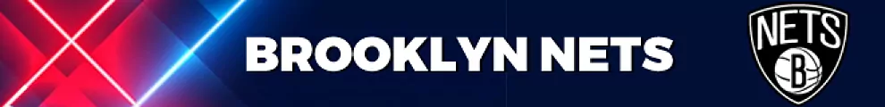
Brooklyn Nets
Lo que apuntaba a un terremoto en Brooklyn se quedó en un simulacro. Kevin Durant pidió a la gerencia de los Nets salir traspasado, pero todo apunta a que comenzará la campaña vestido de blanco y negro. La otra novela del verano tampoco resultó en nada. Kyrie Irving sigue siendo jugador de unos Nets que volverán a confiar en Nash para domar un vestuario tan talentoso como conflictivo.
Altas: Chiozza, James Johnson, Markief Morris, Royce O'Neale, Sumner, T.J. Warren y
Bajas: Aldridge, Bruce Brown, Dragic, Drummond y Griffin.
Quinteto: Irving, Joe Harris, Simmons, Durant y Claxton.
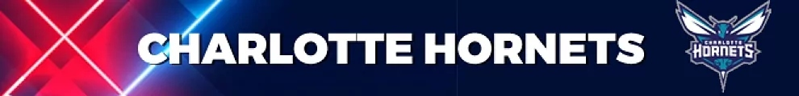
Charlotte Hornets
La vida de la mano de LaMelo Ball. El base, tras un curso en el que entró en el All-Star, debe liderar a unos Hornets a los que hay motivos extra deportivos que les golpean. Centrados en lo ocurrido con Miles Bridges, que tras ser uno de sus jugadores más valiosos y espectaculares tiene pie y medio fuera de la liga.
Altas: Martin, Smith Jr. Williams y McGowens.
Bajas: Harrell.
Quintetos: LaMelo Ball, Kelly Oubre Jr., Hayward, PJ Washington y Mason Plumlee.
Chicago Bulls
Uno de los equipos más atractivos para ver la próxima temporada si mantiene el bloque sano. La pasada temporada mostraron destellos de lo que puede ser este equipo, aunque quizás estén un peldaño por debajo de Miami Heat, Bucks, Celtics y Sixers en el Este. Goran Dragic y Andre Drummond se suman a un equipo que parece que tiene claras las intenciones ofensivas, porque Demar DeRozan y Zach LaVine son las estrellas de la franquicia. Veremos si pueden mejorar el sexto puesto que obtuvieron la pasada temporada.
Altas: Goran Dragic, Andre Drummond, Carlik Jones.
Bajas: Troy Borwn Jr, Tyler Cook, Matt Thomas, Tristan Thompson.
Quinteto: Lonzo Ball, Alex Caruso, Demar DeRozan, Zach LaVine, Nikola Vucevic
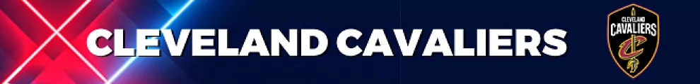
Cleveland Cavaliers
No son los tiempos de Lebron, pero Cleveland vuelve a atraer miradas. La llegada de Donovan Mitchell, sacrificando el futuro del equipo, eleva el techo de unos Cavs obligados a colarse en Playoffs. Mobley y Garland escoltarán al ex de los Jazz en su primera campaña en el Este.
Altas: Cooper, Diakite, Hinton, Robin López, Mitchell, Neto y Ricky Rubio.
Bajas: Moses Bown, Ed Davis, Goodwin, Markkanen, Rondo y Sexton.
Quinteto: Garland, Mitchell, Okoro, Mobley y Jarret Allen.
Dallas Mavericks
La estrella de la franquicia, Luka Doncic, intentará llevar de nuevo al equipo de Texas a los playoffs y poder repetir final de Conferencia, pero esta vez quieren ganar el anillo de la NBA como ha dicho en el Media Day. Desde que llegó el esloveno al equipo, los Mavs han conseguido jugar la tres últimas temporadas de manera consecutiva los playoffs. La siguiente temporada se presenta un tanto ilusionante para los Mavs, ya que han conseguido hacerse con los servicios del interior Christian Wood, que jugó en Houston Rockets la pasada temporada y promedió 17'9 puntos.
Altas: Tyler Dorsey, Tyler Hall, JaVale McGee, Christian Wood, McKinley Wright.
Bajas: Sterling Brown, Jalen Brunson, Trey Burke, Marquese Chriss, Boban Marjanovic, Moses Wright.
Quinteto: Luka Doncic, Spencer Dinwiddie, Tim Hardaway Jr, Max Kleber, JaVale McGee
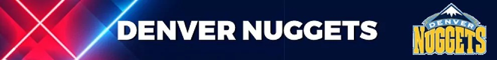
Denver Nuggets
Hace dos temporadas los Nuggets dieron la sorpresa al llegar a la final de la Conferencia Oeste en la que se enfrentaron a los Lakers, y la cual perdieron en la famosa burbuja de Orlando. Prácticamente el bloque de ese equipo se mantiene, liderados por el MVP de la regular season 2021/2022 Nikola Jokic, y Jamal Murray, que estuvo lesionado la campaña pasada. Los de Michael Malone notaron mucho la ausencia de Jamal Murray, pero cuando esté recuperado va a ser un equipo a tener en cuenta para hacer grandes cosas en la temporada.
Altas: Bruce Brown Jr, Kentavious Caldwell-Pope, DeAndre Jordan, Ish Smith, Justin Tillman, Jack White.
Bajas: Will Barton, Facundo Campazzo, DeMarcus Cousins, Bryn Forbes, JaMychal Green, Markus Howard, Monte Morris, Austin Rivers.
Quinteto: Jamal Murray, Bones Hyland, Michael Porter Jr, Aaron Gordon, Nikola Jokic

Detroit Pistons
Tras varios años de reconstrucción, en esta temporada se espera que los Pistons comiencen a asomar la cabeza. Para ello, Cade Cunningham debe continuar su progresión tras un buen año rookie junto a Bey y el novato Ivey. La llegada de Bojan Bogdanovic aporta la experiencia necesaria a un equipo en el que gobierna la juventud.
Altas: Bojan Bogdanovic, Burks, Knox, Nerlens Noel, Skyes y Kemba Walker.
Bajas: Carsen Edwards, Garza, Jerami Grant, Frank Jackson, Saben Lee, Olynyk y Pickett.
Quinteto: Cunningham, Ivey, Bey, Bojan Bogdanovic y Marvin Bagley III.
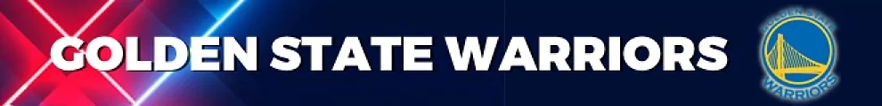
Golden State Warriors
Misma base, mismas señas de identidad que le dan el estilo que cambió el baloncesto. Curry seguirá siendo su fundamento, clave y la dictadura del triple buscará implantarse alguna temporada más.
Altas: Quiñones, DiVicenzo y Green.
Bajas: Toscano-Anderson, Lee, Porter Jr. Payton II y Bjelica-
Quinteto: Curry, Thompson, Wiggins, Green y Looney.
Houston Rockets
Tras elegir en el Draft de 2021 en el puesto número dos a Jalen Green, el equipo entrenado por Stephen Silas ha vuelto a tener suerte de cara al Draft 2022, y ha elegido en el puesto número tres al ala-pívot Jabari Smith. Eso quiero decir que se tendrá que ganar los minutos el español Usman Garuba. En el róster está además el joven pívot turco Alperen Sengun. Como equipo intentarán quedar en un mejor lugar en la clasificación, puesto que quedaron últimos la anterior temporada en la Conferencia Oeste.
Altas: Sterling Brown, Trey Burke, Marquese Chriss, Boban Marjanovic.
Bajas: Anthony Lamb, Trevelin Queen, Dennis Schroder, John Wall, Christian Wood.
Quinteto: Kevin Porter Jr, Eric Gordon, Jalen Green, Jabari Smith, Alperen Sengun
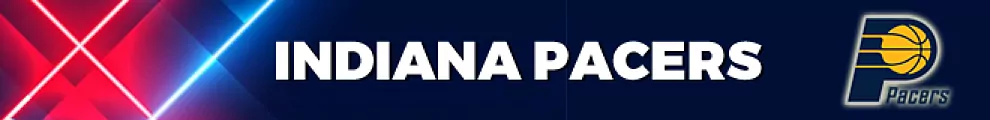
Indiana Pacers
Tras varios años eludiendo esta práctica, los Pacers por fin han optado por el 'tanking'. Con el traspaso de Sabonis a Sacramento llegó Haliburton en febrero, la gran esperanza de los de Carlise. En la misma dirección han ido también las salidas de Brogdon y TJ Warren. Finalmente Myles Turner, eterno candidato a ser traspasado, seguirá en un equipo en el que el desarrollo de Duarte, Mathurin y Haliburton será más importante que los resultados.
Altas: Justin Anderson, Galloway, Nesmith, Pelle, Sirvydis y Theis.
Bajas: Brogdon, Ricky Rubio, Stephenson, TJ Warren, Washington Jr. y York.
Quinteto: Haliburton, Hield, Duarte, Jalen Smith y Turner.
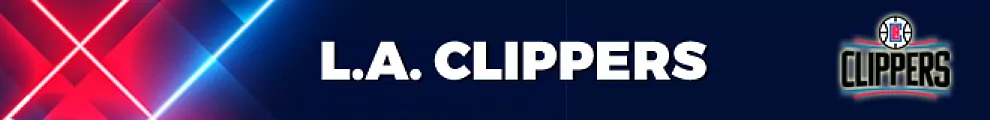
Los Ángeles Clippers
El inicio de temporada es el día de la marmota de los angelinos. Cada año comienzan la campaña como la plantilla más completa de la liga, pero las lesiones terminan por minar sus esperanzas. En la dificultad de las lesiones de Paul George y Leonard ha emergido el talento de Tyron Lue como entrenador y de jugadores como Terance Mann. Si sus estrellas se mantienen sanas son claros aspirantes al anillo.
Altas: Moses Brown y John Wall.
Bajas: Hartenstein, Rodney Hood y Scrubb.
Quinteto: Reggie Jackson, Paul George, Leonard, Batum y Zubac.
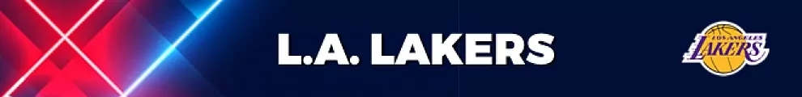
Los Ángeles Lakers
Son siempre animadores del mercado. Eso es innegable y por mucho que 'llueve' en Hollywood siempre se relacionará a cualquier jugador con los Lakers. No han conseguido liberarse de Russell Westbrook, su gran objetivo para maniobrar con todo lo demás y brillan por firmar a Dennis Schröder tras su gran EuroBasket -por segunda ocasión-.
Altas: Patrick Beveley, Damian Jones, Troy Brown Jr., Juan Toscano-Anderson, Scotty Pippen Jr., Cole Swider, Thomas Bryant, Lonnie Walker IV y Dennis Schröder.
Bajas: Monk, Horton-Tucker y Johnson.
Quinteto: Westbrook, Schröder, James, Davis y Bryant
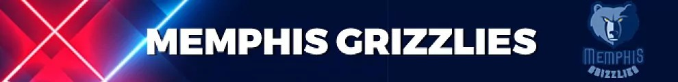
Memphis Grizzlies
Sin lugar a dudas, uno de los equipos más espectaculares de ver la temporada pasada y esperemos que esta sea así. Fueron la gran revelación la campaña anterior porque quedaron segundos en la Conferencia Oeste, aunque perdieron con los Warriors en la semifinal de los playoffs. Ja Morant es la gran estrella de la franquicia, un jugador único, explosivo y que puede hacer de todo en la pista. Eso sí, a su alrededor están jugadores que tienen un gran futuro por delante, como es el caso de Dillon Brooks y Jaren Jackson. Ojalá que esta temporada Taylor Jenkins le dé más minutos al español Santi Aldama.
Altas: Danny Green.
Bajas: Kyle Anderson, Jarrett Culver, De'Anthony Melton, Yves Pons, Tyrell Terry.
Quinteto: Ja Morant, Desmond Bane, Dillon Brooks, Jaren Jackson, Steven Adams
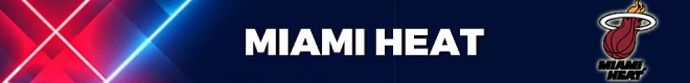
Miami Heat
Un seguro de vida que buscarán el gran paso con Erik Spoelstra a los 'mandos' de la nave. Es la realidad en Miami, que siguen dependiendo de Jimmy Butler o Bam Adebayo en ataque. En plantilla, destaca la incorporación del rookie serbio Nikola Jovic. A sus 20 años está señalado a ser otro mago desde el 'Viejo Continente'.
Altas: Robinson, Bouyea, Cain, Days y Smith.
Bajas: PJ Tucker y Markieff Morris.
Quinteto: Kyle Lowry, Tyler Herro, Jimmy Butler, Max Strus y Bam Adebayo.
Milwaukee Bucks
Un héroe con el orgullo herido es más peligroso. Algo que deberían tener en cuenta los equipos de la NBA tras las derrotas de Giannis Antetokounmpo ante Boston en los pasados Playoffs y Alemania con la selección griega. El equipo de Wisconsin apenas se ha movido en el mercado, y la salud de hombres como Middleton y Brook López sería su mejor fichaje.
Altas: Bolden y Joe Ingles.
Bajas: Rayjon Tucker.
Quinteto: Holiday, Grayson Allen, Middleton, Antetokounmpo y Brook López.
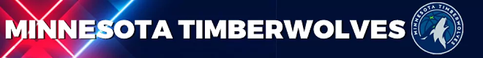
Minnesota Timberwolves
Los Timberwolves son otro equipo que ha apretado el botón de 'Ganar ya'. La llegada de Rudy Gobert es un 'all-in' de los de Minnesota para mejorar su plantilla, sacrificando por el camino rondas futuras y jugadores de rotación. El aclope de sus torres gemelas, Towns y Gobert, será decisivo para que consigan superar la primera ronda de Playoffs.
Altas: Kyle Anderson, P.J. Dozier, C.J. Elleby, Forbes, Garza, Gobert, Paschall y Austin Rivers.
Bajas: Malik Beasley, Beverly, Bolmaro, Layman, Monroe, Okogie, Vanderbilt y Wright.
Quinteto: D' Angelo Russell, Edwards, McDaniels, Towns y Gobert.
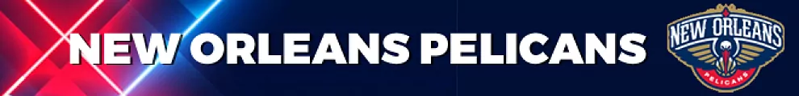
New Orleans Pelicans
Las posibilidades de los Pelicans dependen de un hombre: Zion Williamson. La salud y el compromiso del ala-pívot marcarán el techo de la temporada. Con la baja del Nº1 del Draft de 2019, el equipo ha crecido bajo el mando de Ingram y el recién renovado C.J. McCollum. Merece la pena esperar a un talento como Zion, pero hay dudas de cómo encajará en la dinámica de un conjunto en ascenso.
Altas: Cheatham.
Bajas: Clark, Harper y Snell.
Quinteto: McCollum, Ingram, Herbert Jones, Williamson y Valanciunas.
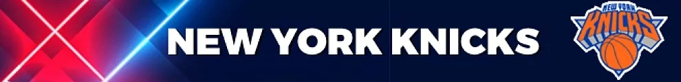
New York Knicks
Los nuevos Knicks viven bajo una eterna aspiración. Lo que podrían haber sido. Es así pues pretendiron firmar a Donovan Mitchell, Kyrie Irving o Donovan Mitchell -que quería firmar por la 'Gran Manzana'- y le dan el máximo a un buen jugador, Jalen Brunson, pero alejado de ser 'carne' de MVP.
Altas: Brunson, Hartenstein, Jeffries, Mykhailiuk, Rose y Walker.
Bajas: Taj Gibson.
Quinteto: Derrick Rose, Evan Fournier, Obi Toppin, RJ Barrett y Mitchell Robinson.
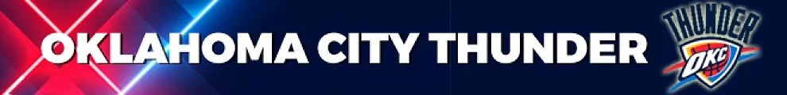
Oklahoma City Thunder
Los Thunder estaban ilusionados de cara al inicio de la nueva temporada, ya que habían elegido en el puesto número 2 del Draft a Chet Holmgren. Pero el joven pívot se lesionó de gravedad el pie derecho en el partido 'The CrawsOver', y se perderá toda la temporada. La franquicia de Oklahoma va a tener que depender de Josh Giddey y Shai Gilgeous-Alexander si quieren obtener grandes resultados, aunque cuesta pensar que vaya a suceder eso. Los presagios de que van a tener una mala temporada los Thunder, impide que se sume al róster Vasilije Micic, actual MVP de la Final Four de la Euroliga con el Anadolu Efes.
Altas: Eugene Omoruyi.
Bajas: Melvin Frazier Jr, Jaylen Hoard, Georgios Kalaitzakis, Isaiah Roby, Zavier Simpson.
Quinteto: Josh Giddey, Luguentz Dort, Shai Gilgeous-Alexander, Aleksej Pokusevski, Mike Muscala
Orlando Magic
Sin duda alguna, el equipo del estado de Florida va a ser uno de los conjuntos más interesantes de ver. La razón es porque en sus filas está el italiano Paolo Banchero, actual número uno del Draft. Además, es un equipo joven que cuenta con un jugador interesante como el alemán Franz Wagner, que viene de firmar 15'2 puntos de media en el EuroBasket. Los Magic tienen una de las plantillas más jóvenes de la NBA, porque el jugador más veterano es Terrence Ross que tiene 31 años y acumula 10 temporadas en la NBA.
Altas: Joel Ayayi, Kevon Harris.
Bajas: Ignas Brazdeikis, Robin Lopez.
Quinteto: Cole Anthony, Gary Harris, Franz Wagner, Paolo Banchero, Mo Bamba
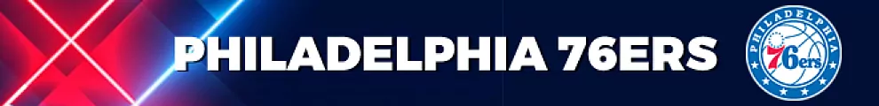
Philadelphia Sixers
'The Process' tiene una nueva oportunidad de dar un paso más en su camino. Embiid, Harden, Doc Rivers y compañía buscan dar un golpe sobre la mesa y colarse, por fin, en unas finales de conferencia que no pisan desde 2019. La gerencia ha hecho su trabajo, mejorando el fondo de armario con Melton, Harrell y P.J. Tucker. Prueba de fuego para un proyecto en entredicho.
Altas: Harrell, Danuel House, Melton, Queen y P.J. Tucker.
Bajas: Danny Green, DeAndre Jordan, Paul Millsap y Myles Powell.
Quinteto: Maxey, Harden, Tobias Harris, P.J. Tucker y Embiid.

Phoenix Suns
Los de Arizona recibieron un golpe durísimo, de esos que tumban proyectos, por parte de Doncic y sus Mavs. El titular de su verano ha sido el escándalo racista de su propietario Robert Sarver, lo que tampoco ayudará. En lo deportivo la noticia es la renovación de Ayton, después de que los Suns igualaran la oferta de 133 millones en 4 años de Indiana. Los años pasan también para Chris Paul (37 ya), por lo que Booker necesitará más del pívot.
Altas: Frank Jackson, Landale, Damion Lee, Okogie y Washington Jr.
Bajas: Aaron Holiday, Lundberg, McGee y Elfrid Payton.
Quinteto: Chris Paul, Devin Booker, Mikal Bridges, Crowder y Ayton.
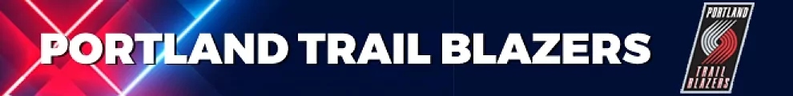
Portland Trail Blazers
Un proyecto que busca identidad. Los Portland Trail Blazers renunciaron a mucho de lo que eran tras cambiar a CJ McCollum el pasado año, y ahora Damian Lillard tiene que volver a liderar un proyecto que está alejado de ser lo que fue: un candidato. Su 'corazón joven' buscará dar un paso más.
Altas: Grant, Payton II.
Bajas: Ingles, Blevins, McLemore, Elleby, Hughes y Bledsoe.
Quinteto: Lillard, Simmons, Sharpe, Grant, y Nurkic.
Utah Jazz
Cambio de ciclo, de forma total y absoluta. En Utah ya no queda 'nadie de los de antes' porque los que fueron sus grandes piezas, Snyder -técnico, Mitchell y Gobert -sobre el parqué- han salido del equipo. Sus objetivos ahora son otros y buscarán reenconstruir para volver a ser candidatos.
Altas: Beasley, Bolmaro, Vanderbilt, Horton-Tucker, Johnson, Sexton, Markkanen, Agbaji, Juzang, Fontecchio, Zeller Lee y Olynyk.
Bajas: Bogdanovic, Mitchell, Beverley, Gobert, Juancho Hernangómez, House y O'Neale.
Quinteto: Mike Conley, Malik Beasley, Simone Fontecchio, Rudy Gay y Lauri Markkanen.
Sacramento Kings
Un equipo joven que necesita, por fin, resultados. Los Kings tienen base para construir y opciones, como Sabonis, Fox o Huerter, que garantizan competitividad. Su gran incógnita sigue siendo dar el paso más para poder llegar a una post-temporada, cosa que en las últimas campañas se ha escapado.
Altas: Kevin Huerter, Ellis, Monk
Bajas: Harkless, Holiday, Jones y DiVicenzo.
Quinteto: De'Aaron Fox, Malik Monk, Kevin Huerter, Richaun Holmes y Domantas Sabonis.
San Antonio Spurs
Dificíl temporada se le presenta al equipo de Gregg Popovich, puesto que ha perdido a su jugador franquicia de la temporada pasada, Dejounte Murray, que se ha marchado en forma de traspaso a Atlanta. Además, cuenta con un equipo joven e inexperto que está lejos de poder luchar para entrar en playoffs y tendrá que depender de muchos novatos. Están muy lejos en San Antonio de volver a disfrutar de su equipo como cuando jugaban Tim Duncan, Manu Ginobili y Toni Parker.
Altas: Gorgui Dieng, Alize Johnson, Isaiah Roby.
Bajas: Devontae Cacok, Jock Landale, Dejounte Murray, D.J. Stewart, Lonnie Walker IV, Robert Woodard II.
Quinteto: Keldon Johnson, Josh Richardson, Isaiah Roby, Jeremy Sochan, Jakob Poeltl
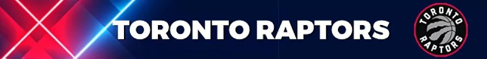
Toronto Raptors
La franquicia de Canadá tiene en sus filas a uno de los jugadores más prometedores que hay en la NBA, Scottie Barnes, que se llevó el premio al mejor rookie la pasada temporada. El jugador de Florida firmó 15'3 puntos, 7'5 rebotes y 3'5 asistencias en 74 partidos. Los campeones de la NBA en 2019 tienen algunos jugadores que consiguieron ese hito, como Fred VanVleet o el camerunés Paskal Siakam. Además, al equipo de Nick Nurse se ha sumado Juancho Hernangomez, reciente MVP de la final del EuroBasket.
Altas: Jeff Dowtin Jr, Juancho Hernangomez, Josh Jackson, Otto Porter, D.J. Wilson.
Bajas: Isaac Bonga, Armoni Brooks, David Johnson, Svi Mykhaliuk, Yuta Watanabe.
Quinteto: Fred VanVleet, Scottie Barnes, OG Anunoby, Gary Trent Jr, Paskal Siakam
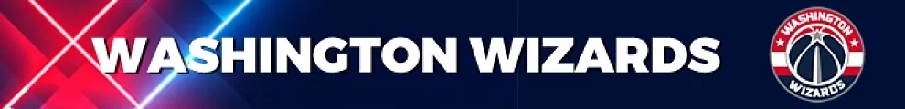
Washington Wizards
En los Wizards respiran. La renovación de Bradley Beal es el principio del equipo para seguir construyendo y garantizarse competir. Todo lo demás serán añadidos y buenas noticias junto al jugador franquicia del 'D.C.' Su objetivo, puestos de playoffs.
Altas: Barton, Morris, Wright y Gibson.
Bajas: Caldwell-Pope, Smith, Satoransky, Neto y Bryant.
Quinteto: Bradley Beal, Johnny Davis, Deni Avdija, Kyle Kuzma y Kristaps Porzingis.